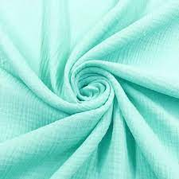
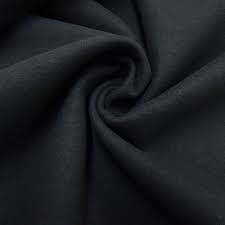
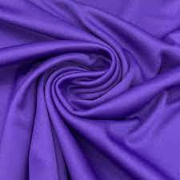
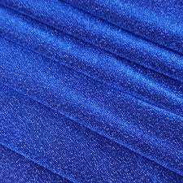

Consulte nosso portal de notícias para ficar dentro sobre tudo no mundo da moda! | Clique aqui
Tecidos
Antes de começar a falar sobre os diferentes estilos de tecidos, é importante fazer uma ressalva sobre a diferença entre tecidos planos e malhas. A diferença entre tecido e malha está na sua composição: as malhas são fios entrelaçados, muitas vezes com materiais sintéticos, e por isso têm mais elasticidade e maleabilidade, já os tecidos têm componentes mais naturais e com menos elasticidade e, por isso, costumam ter um caimento mais estruturado. É claro que tudo isso pode variar bastante, e por isso vale a pena olhar mais de perto os favoritos do mundo da moda:

O algodão é um tecido considerado confortável, com boa absorção, tanto para tingimentos quanto para o suor. Tem um toque agradável no corpo e, por ser mais natural, tem menos chances de causar alergias. Além de tudo, é um tecido de fácil manutenção.
Ele pode ser manipulado em diferentes gramagens, para ficar mais fino ou espesso de acordo com seu volume de fios. A peça básica por excelência é recomendada para ser usada no dia a dia e pode ser encontrada em diversas formas, com destaque especial para o tecido jeans, que recebe diversos procedimentos diferentes.
Sendo a principal peça do inverno, a lã tem uma história muito longa ao redor de todo o mundo e até hoje é a principal fibra natural na composição de peças para o inverno. Ela já possui uma variedade de fórmulas sintéticas e garante um ótimo isolamento térmico, além de ser fácil de tingir. A lã é o principal material das peças de tricot, também de diversos acabamentos e forros de inverno e é inconfundível com sua textura, geralmente usada em peças de sobreposição e acessórios como luvas, cachecóis e gorros.

A malha é o material mais variado dentro da nossa lista, pois pode ser produzida com diferentes materiais, a maioria sintéticos hoje em dia, como o poliéster e a poliamida, popularmente usada nas roupas de academia e também peças de praia, por oferecem liberdade de movimento, boa absorção e a compressão modeladora.
Além disso, as malhas são de fácil manutenção e não precisam ser passadas, mas exigem alguns cuidados na lavagem e secagem. Por terem maior contato com o corpo e um certo nível de transparência dependendo da roupa, as malhas são menos formais, mas podem muito bem ser combinadas com outras peças para criar looks hi-lo, como combinações com legging e peças de alfaiataria.
Os fios metalizados cheios de brilho se tornaram um clássico entre os anos 70 e 80. É uma malha bem flexível e chamativa. Em looks monocromáticos, para festa e para a noite, em especial, o Lurex representa a elegância.

A viscose é um tecido leve, respirável, cheio de movimento e muito usado no verão, figurando em blusinhas, macacões e macaquinhos estampados. É um material muito prático e fácil de estruturar, que pode receber efeitos variados.
Também tem uma natureza mais informal, apesar de render peças muito queridas no dia a dia dos looks office, como as calças pantalona e pantacourt, além de casaquinhos e kimonos..png)
A seda costuma ser um material mais delicado, tanto à luz quanto ao calor, e exige uma série de cuidados que valem a pena serem levados em consideração em suas diversas combinações. Ela é sinônimo de bom gosto e sofisticação, com seu brilho único e a possibilidade de se destacar em combinação com as mais diversas texturas de roupas.